GPT娘与鲸鱼娘表情动作库
非官方 AI 生成素材；第三方权利未全部核实。使用前请阅读 来源与许可说明。GIF 实际播放流畅度尚未验收。
双Q版贴贴头像 · avatar动漫鲸鱼娘 · 摊手疑惑 · gifQ版GPT娘 · 竖拇指点赞 · gif双Q版 · 搭肩鼓励 · gif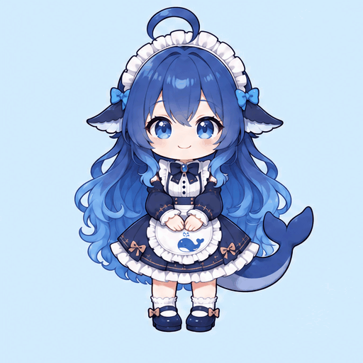
Q版鲸鱼娘 · 捧脸害羞 · gif动漫GPT娘 · 抬指讲解 · gif双Q版 · 牵手举起 · gifQ版GPT娘 · 抬手指尖比心 · gif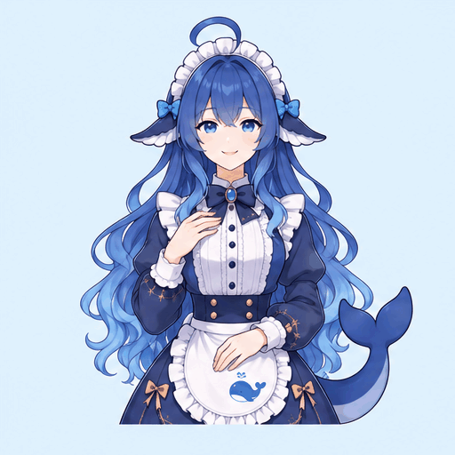
动漫鲸鱼娘 · 挥手告别 · gif双Q版 · 并肩鞠躬致谢 · gif动漫鲸鱼娘 · 捧书点头 · gif动漫GPT娘 · 戴耳机聆听 · gif双Q版 · 共同指向白板 · gif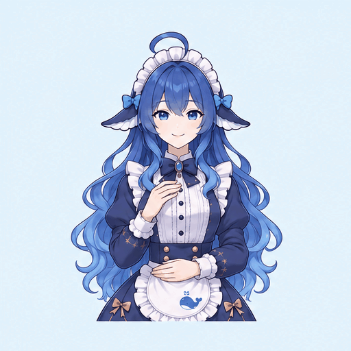
动漫鲸鱼娘 · 掩嘴轻笑 · gifQ版GPT娘 · 抬手示意稍等 · gif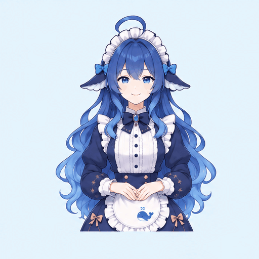
动漫鲸鱼娘 · 轻扶发箍 · gif双Q版 · 递出饼干 · gifQ版GPT娘 · 摇头提醒 · gif动漫鲸鱼娘 · 递出小花 · gif动漫GPT娘 · 执笔记录 · gif双Q版 · 碰拳加油 · gif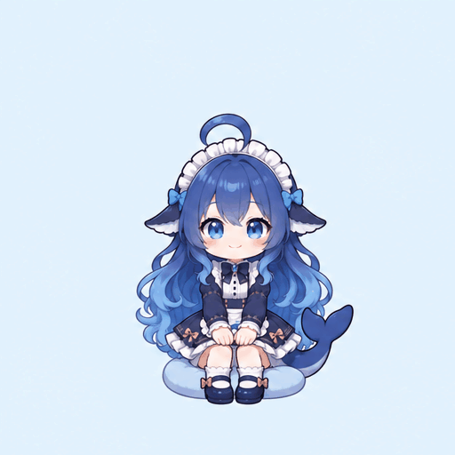
Q版鲸鱼娘 · 坐着伸懒腰 · gif动漫GPT娘 · 举杯休息 · gif动漫鲸鱼娘 · 鼓掌鼓励 · gifQ版GPT娘 · 困困打哈欠 · gif双Q版 · 一起读书翻页 · gif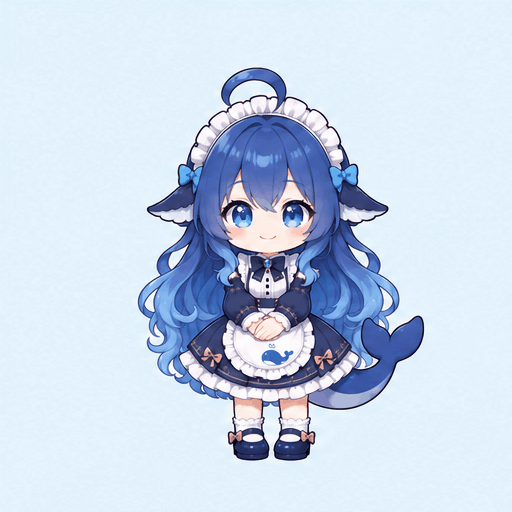
Q版鲸鱼娘 · 鞠躬感谢 · gif动漫GPT娘 · 点头认可 · gif双Q版 · 击掌庆祝 · gifQ版鲸鱼娘 · 歪头思考 · gif动漫GPT娘 · 招手问好 · gif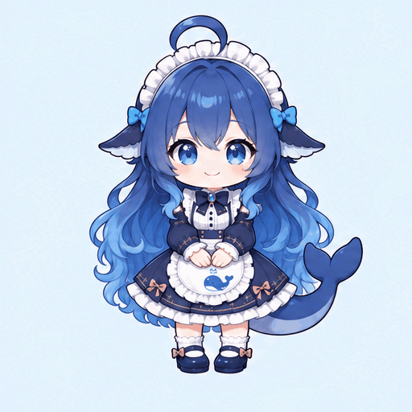
Q版鲸鱼娘 · 摇尾巴 · gif双Q版 · 贴贴眨眼 · gifQ版GPT娘 · 比心眨眼 · gifQ版鲸鱼娘 · 挥手眨眼 · gif摸头安慰 · static-duo拉袖求助 · static-duo击掌庆祝 · static-duo共同看电脑 · static-duo一起学习 · static-duo一起挥手 · static-duo合作搬书 · static-duo分享饼干 · static-duo猜拳游戏 · static-duo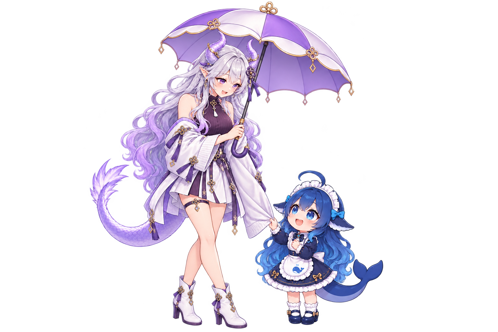
一起撑伞 · static-duo鲸鱼赠礼 · static-duo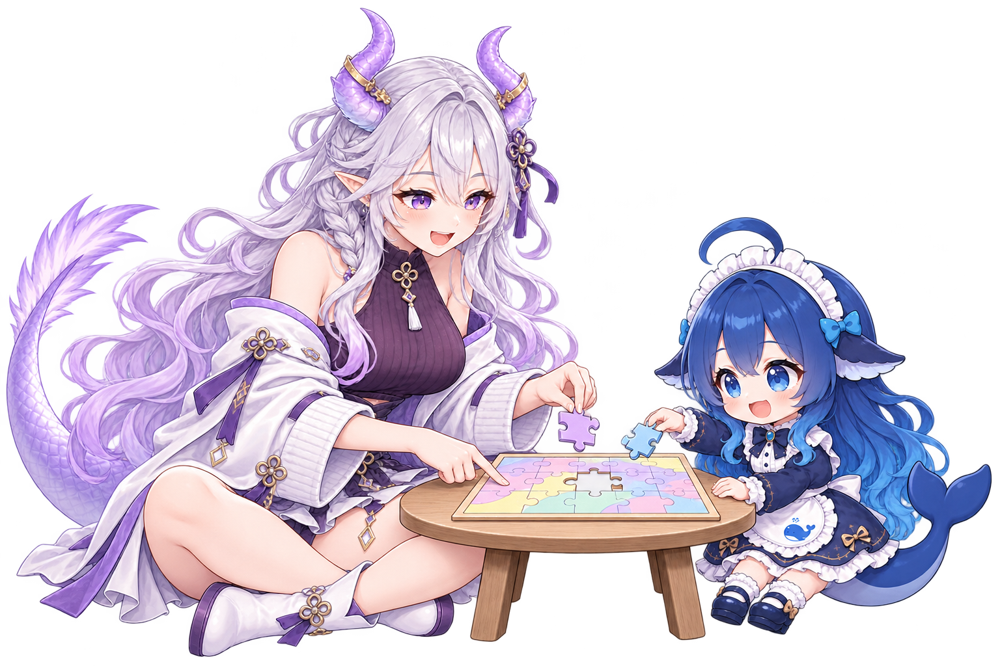
一起拼图 · static-duo帮忙系围巾 · static-duo一起浇花 · static-duo盖毯照顾 · static-duo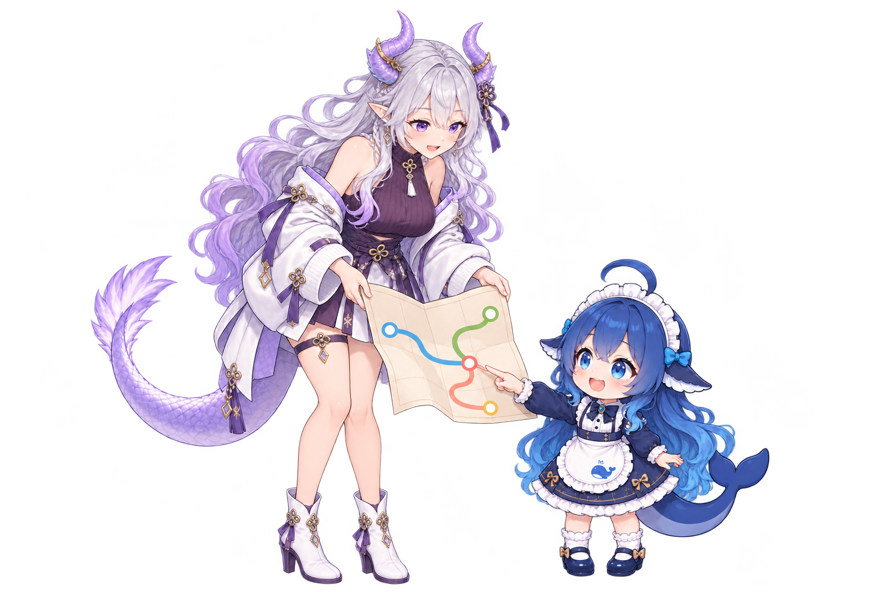
一起看地图 · static-duo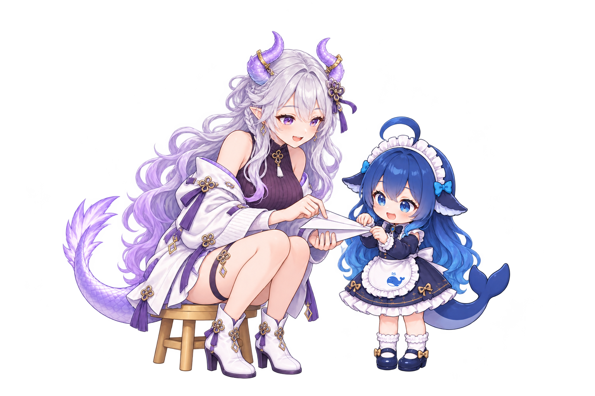
一起折纸飞机 · static-duo一起自拍 · static-duo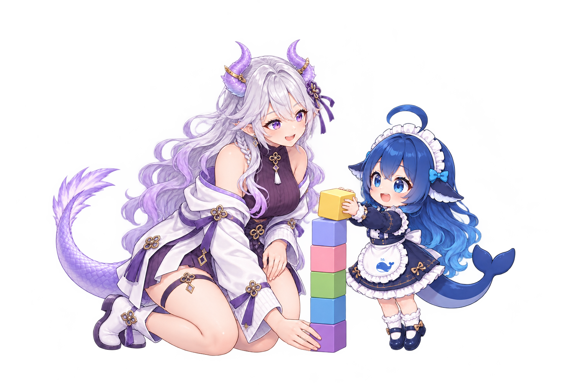
合作搭积木 · static-duo牵手跳舞 · static-duo倒茶休息 · static-duo递纸巾照顾 · static-duo帮忙背书包 · static-duo合作打游戏 · static-duo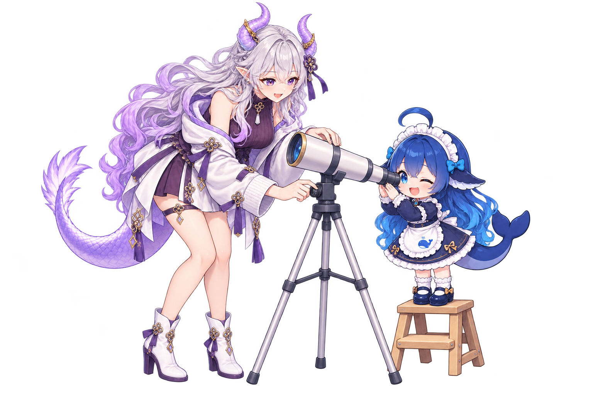
一起观测 · static-duo合作搅拌 · static-duo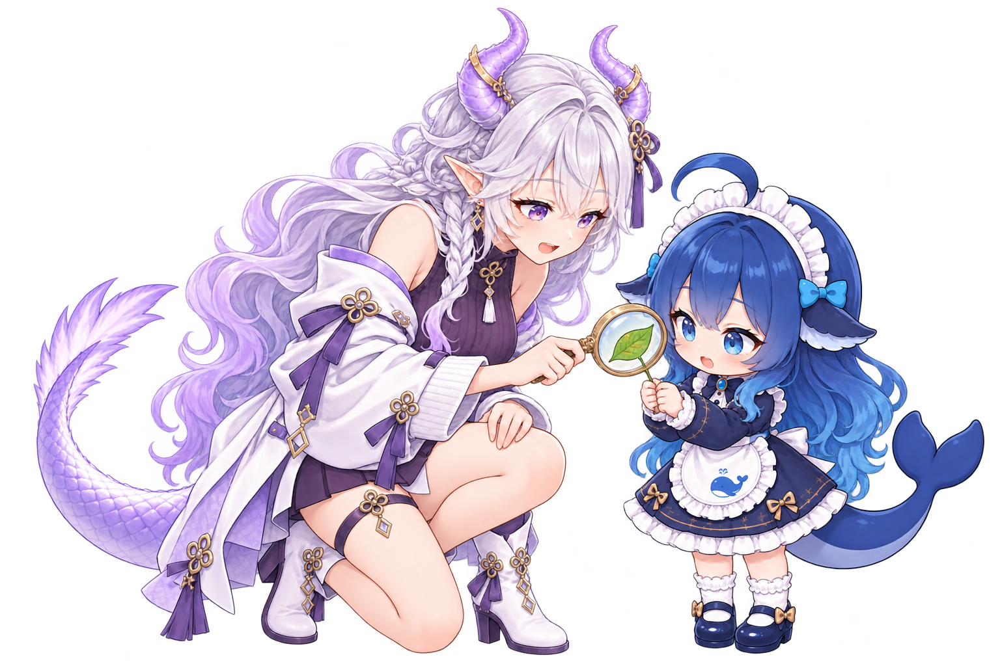
共同观察叶片 · static-duo拉钩约定 · static-duo一起拉伸 · static-duo合力推行李 · static-duo相互鞠躬致谢 · static-duo合奏时光 · static-duo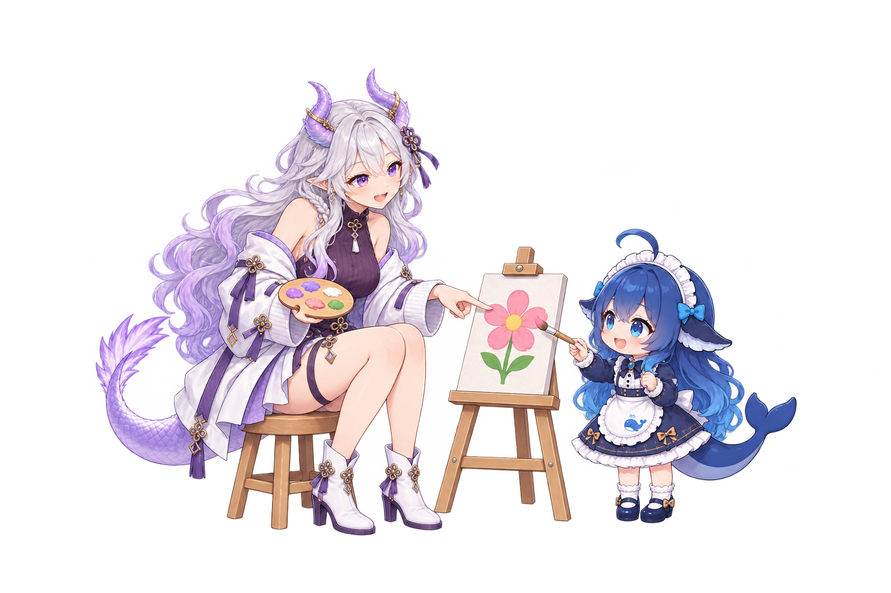
合作画画 · static-duo背靠背搭档 · static-duo一起吹泡泡 · static-duo一起捧奖杯 · static-duo一起开箱惊喜 · static-duo悄悄提示 · static-duo共同举空白横牌 · static-duo拥抱鼓励 · static-duo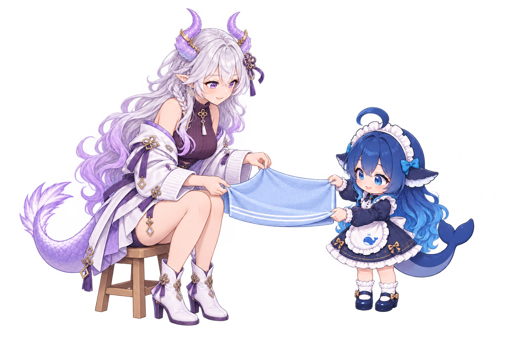
合作叠毛巾 · static-duo接力传棒 · static-duo一起看地球仪 · static-duo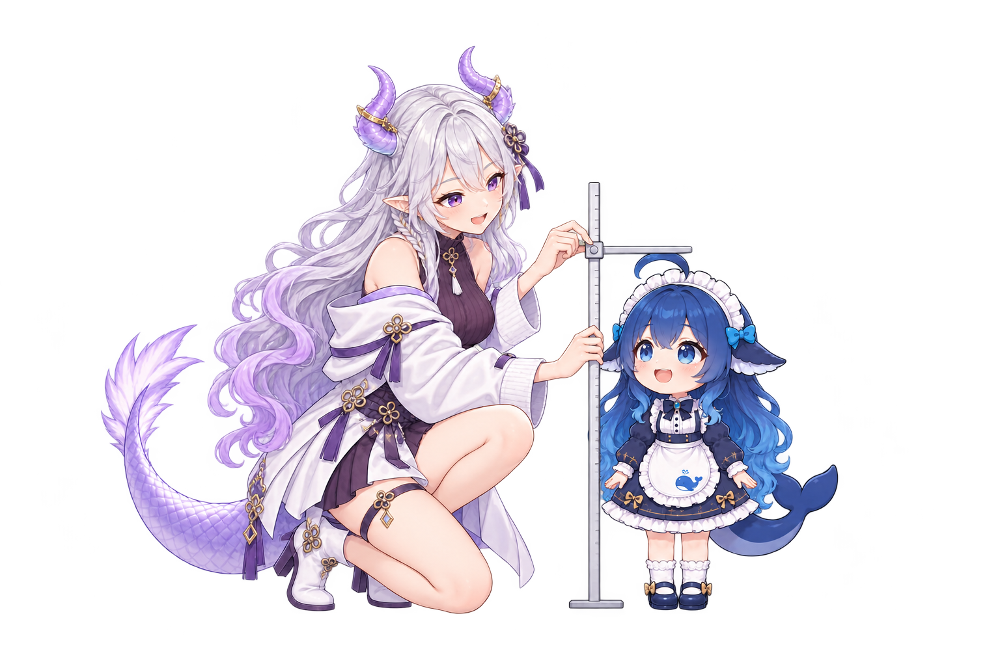
帮忙量身高 · static-duo合作整理相册 · static-duo互相点赞 · static-duo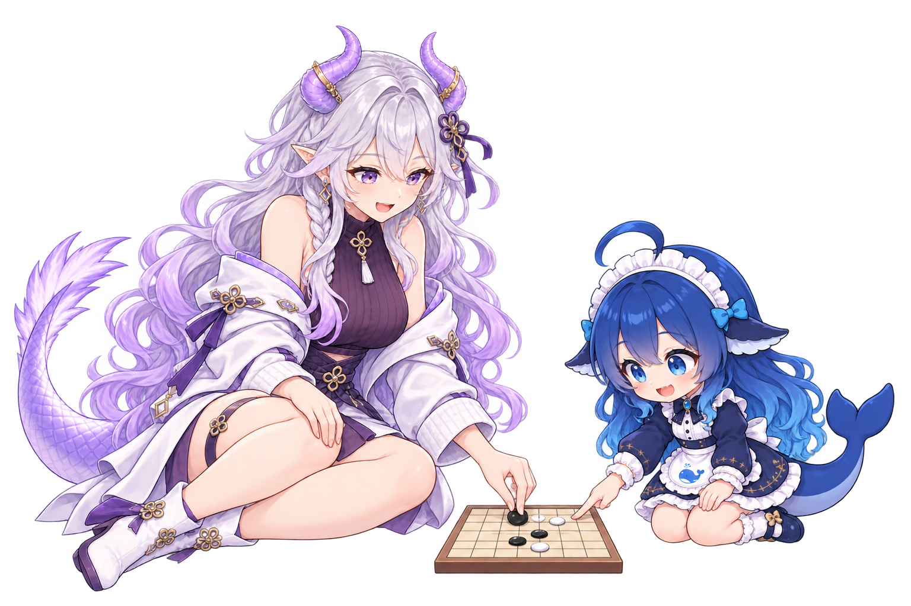
一起下棋 · static-duo帮忙梳头 · static-duo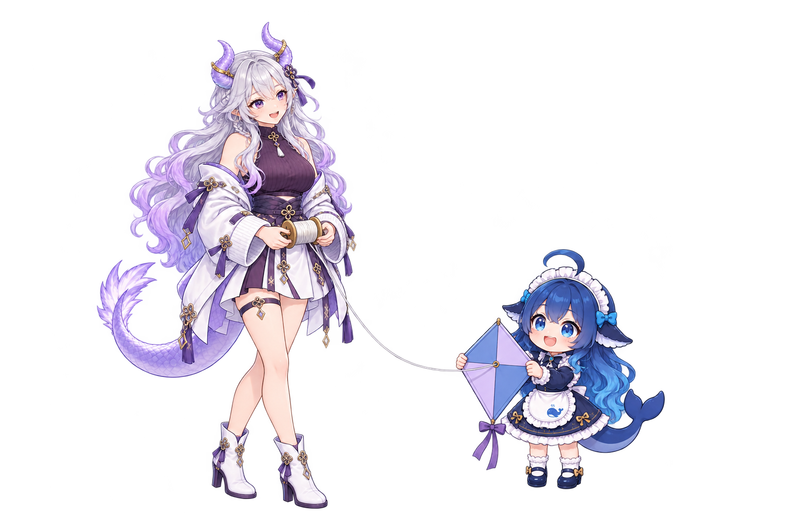
合作准备放风筝 · static-duo合作清扫 · static-duo一起看沙漏 · static-duo递麦采访 · static-duo合力拧瓶盖 · static-duo合作装纸风车 · static-duo轻抛接球 · static-duo合作做三明治 · static-duo帮忙扣鞋带 · static-duo一起吃惊 · static-duo一起举手欢呼 · static-duo合作准备野餐 · static-duo合作系礼盒丝带 · static-duo一起托腮思考 · static-duo一起拼手势心 · static-duo合作收纳文具 · static-duo合提购物袋 · static-duo帮忙戴遮阳帽 · static-duo合作整理花束 · static-duo共同观察磁铁 · static-duo一起指左讲解 · static-duo害羞摸后脑 · static-single比小心心 · static-single扶额无奈 · static-single交臂自信 · static-single展示空白卡片 · static-single合掌请求 · static-single冬衣围巾造型 · static-single运动热身造型 · static-single查看手机日程 · static-single盘腿静心 · static-single坐着吃饼干 · static-single抱书站姿 · static-single坐桌写笔记 · static-single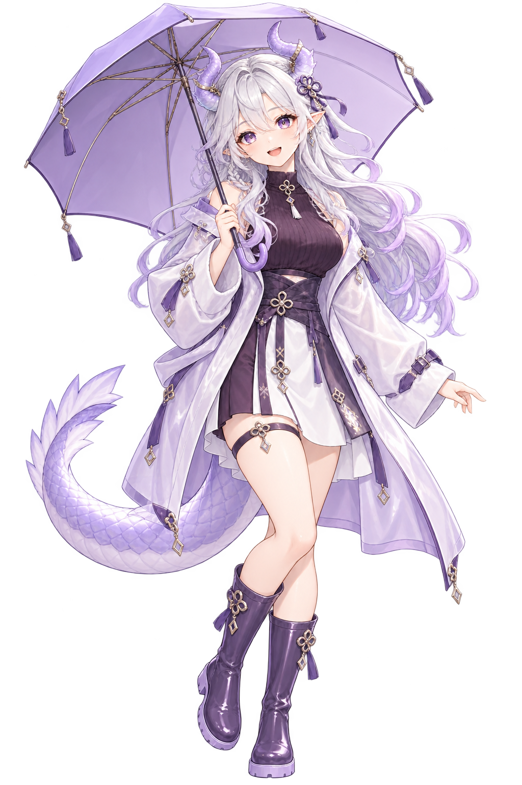
雨衣持伞 · static-single遥控器讲解 · static-single操作电脑 · static-single戴耳机静听 · static-single清单讲解 · static-single刚睡醒 · static-single暂停提醒 · static-single举手提问 · static-single雨衣持伞 · static-single耳麦讲解 · static-single拍手鼓掌 · static-single立绘·坐着阅读 · static-single立绘·连帽衫换装 · static-single立绘·托腮思考 · static-single立绘·指向讲解 · static-single比赞肯定 · static-single惊讶捂脸 · static-single鼓腮生气 · static-single伸懒腰 · static-single认真倾听 · static-single连帽衫换装 · static-single握拳加油 · static-single鼓腮生气 · static-single指向讲解 · static-single电脑操作 · static-single实验服换装 · static-single连帽衫换装 · static-single喝水 · static-single伏桌小睡 · static-single行走 · static-single低头难过 · static-single小跑 · static-single侧面站姿 · static-single无奈摊手 · static-single背面回头 · static-single写笔记 · static-single疑惑挠头 · static-single背包出发 · static-single惊讶 · static-single喝水休息 · static-single趴桌困倦 · static-single挥手持笔记本立绘 · static-single书写 · static-single指向 · static-single挥手B · static-single挥手A · static-single思考 · static-single开心 · static-single眨眼 · static-single普通 · static-single摊手讲解 · static-single开心欢呼 · static-single托腮思考 · static-single抱枕休息 · static-single坐着读书 · static-single打招呼 · static-single鞠躬感谢 · static-single跳起庆祝 · static-single坐姿思考 · static-single指向讲解 · static-single蜷卧小睡 · static-single侧躺阅读 · static-single坐着用电脑 · static-single盘腿读书 · static-single